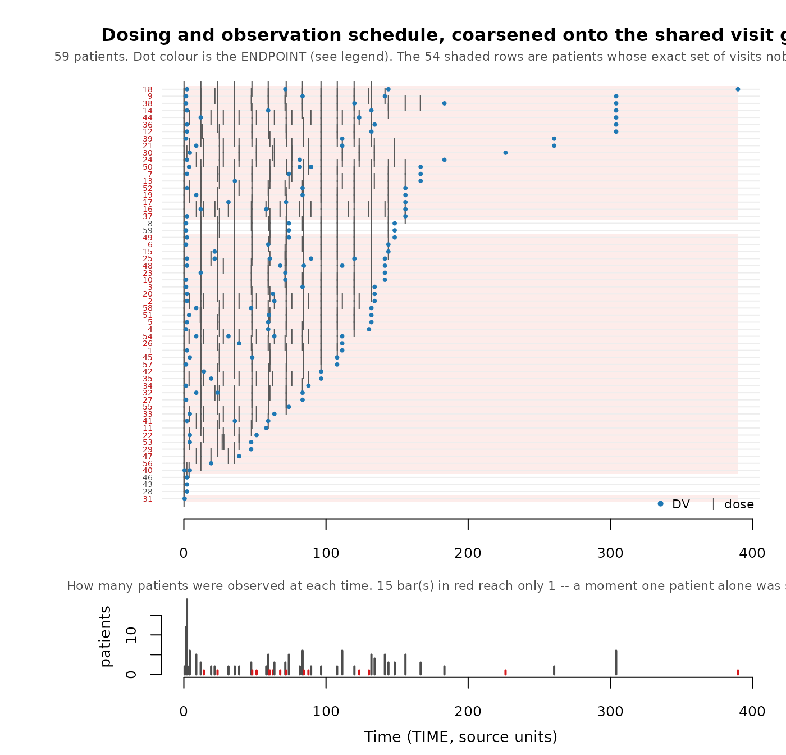

Scorecard: Checks of the synthetic data
Andrew Stein
Source:vignettes/scorecard-synthetic-data-checks.Rmd
scorecard-synthetic-data-checks.RmdYou have generated a synthetic dataset. Should you use it? The
scorecard, generated by synpmx_scorecard() helps assess
this and this Vignette explains it.
The scorecard
The scorecard contains a table of the ollowing items:
- The check of the dataset that is performed.
- hat data is read (source data, synthetic data, or both)
- The resulting calculation from the check
- A verdict for whether the check passed, failed or needs review
- An
explorefunction to help assess any checks that failed or need review.
There are four categories of checks:
- A. Is the dataset valid
- B. Is any individual patient identifiable based on the synthetic data
- C. Has the synthetic study design significantly changed from the source
- D. How much have the covariate and observation distributions changed
| # | Question |
|---|---|
| A1 | Is the synthetic table a legal PMX dataset? |
| A2 | Is the source legal under the roles you declared? |
| A3 | Did every endpoint survive? |
| A4 | Did the cohort size survive? |
| A5 | Did number of doses survive? |
| A6 | Did a discrete endpoint stay discrete? |
| B1a | Does any avatar have a visit set nobody else shares? |
| B1b | Does any avatar have a dose schedule nobody else shares? |
| B2 | Does any synthetic patient stand out from its own stratum? |
| B3 | Is any avatar too close to a real patient in value space? |
| B4a | Is any generated time vector a copy of an exposed real one? |
| B4b | Is any generated DV vector a copy of an exposed real
one? |
| B5a | Does any categorical level sit on a single synthetic patient? |
| B5b | Did a level too few source patients held reach the output? |
| C1 | Did every arm keep its endpoints and its size? |
| C2 | What features of the study were lost? |
| D1 | Do the values land in the same range? |
Seven of these rows can say FAIL, and no
others. A1, because the output is not a legal dataset; A3 and
A6, because it is not the study that went in — an endpoint missing, or a
value on a discrete endpoint that the source could not have held; and
B1a, B1b, B4a and B4b, because each of them means one real patient’s
structure was reproduced verbatim. Every other row is
review even when its answer is unwelcome, because every
other row can move for a legitimate reason: a subject dropped for want
of donors, an arm that changed size, a statistic wandering at a small
sample size, a real source a validator objects to. A card of
reviews is a card to read, not a card that failed.
One requirement is deliberately not in the table, because no function can answer it: does the pipeline that will consume the real study run unchanged against this? It is the only strictly necessary check, and it is the reason the package exists.
vignette("demo") closes by computing this scorecard on a
real run, so you can see what the filled-in version looks like.
The two datasets used here
case1_pkpd <- as.data.frame(
get(utils::data(list = "case1_pkpd", package = "xgxr"))
)
case1_roles <- pmx_roles(
id = "ID", time = "TIME", dv = "LIDV", amt = "AMT", evid = "EVID",
cmt = "CMT", dvid = "NAME", nominal_time = "NOMTIME",
strata = c("TRTACT", "DOSE"), covariates = "WEIGHTB",
keep = "STUDY"
)
case1_synth <- suppressWarnings(
synpmx_avatar(case1_pkpd, case1_roles, seed = 808)
)
data("pheno_sd", package = "nlmixr2data")
pheno_roles <- pmx_roles(
id = "ID", time = "TIME", dv = "DV", amt = "AMT", evid = "EVID",
covariates = c("WT", "APGR")
)
pheno_synth <- suppressWarnings(
synpmx_avatar(pheno_sd, pheno_roles, seed = 1010)
)xgxr::case1_pkpd is the worked example: 180 patients,
six treatment arms, a declared nominal time, two endpoints — a
pharmacokinetic (PK) concentration and a continuous pharmacodynamic (PD)
effect — and a baseline weight. It is the shaped like a real study
report, and most of these checks pass on it.
nlmixr2data::pheno_sd is 59 real neonates given
phenobarbital in routine clinical care. Its checks
fail, and it is here for that reason: a document in
which everything passes teaches nothing. Where the two disagree is where
the check is doing work.
A. Is it a valid dataset at all?
validate_pmx(case1_synth, case1_roles)$valid
#> [1] TRUE
validate_pmx(pheno_synth, pheno_roles)$valid
#> [1] TRUEvalidate_pmx() checks schema and column classes, event
grammar, time monotonicity within subject, censoring flags against their
dependent variable (DV), infusion start/stop pairing,
baseline covariates that are actually constant, and strata that do not
vary within a subject. This check is run on both the synthetic data and
teh source.
case1_roles_cens <- pmx_roles(
id = "ID", time = "TIME", dv = "LIDV", amt = "AMT", evid = "EVID",
cmt = "CMT", dvid = "NAME", nominal_time = "NOMTIME", cens = "CENS",
strata = c("TRTACT", "DOSE"), covariates = "WEIGHTB"
)
validate_pmx(case1_pkpd, case1_roles_cens)$valid
#> [1] FALSEThat study’s CENS column is meaningful only for the PK
endpoint. The PD effect is signed, so a row flagged as below the limit
of quantification (BLOQ) reports a value above uncensored ones,
and the flag cannot mean for PD what it means for PK. Declaring
cens here would have produced a coherent-looking dataset
with nonsense censoring; the right answer is to leave it undeclared or
to correct the censoring variable.
Time after dose
validate_pmx() reports a disagreement in time after dose
(TAD) as a warning, so it passes
$valid and still has to be read. A trough sample must stay
a trough, and this is the column that says whether it did.
tad is an output, not an input.
synpmx_avatar() recomputes it from the generated times and
dose rows and overwrites whatever the source held. Declaring the role
says which column to overwrite and carry through; the source’s values
never generate anything. validate_pmx() on the
source is the one place those values are read, and a
disagreement there is a real finding every time:
nimo <- get(utils::data(list = "nimoData", package = "nlmixr2data"))
nimo_roles <- pmx_roles(
id = "ID", time = "TIME", dv = "DV", amt = "AMT", evid = "EVID",
rate = "RATE", mdv = "MDV", tad = "TAD", occasion = "OCC",
covariates = c("BSA", "AGE", "HGT"), keep = "DOS"
)
nimo_checks <- validate_pmx(nimo, nimo_roles)$checks
cat(nimo_checks$message[nimo_checks$check == "tad_agreement"])
#> Declared TAD disagrees with time since the most recent dose on 143 of 321 observation row(s) (45%), by up to 311.9. Common causes: TAD is measured from the end of an infusion or from a nominal dose time rather than the recorded dose row; the study uses a dosing occasion rather than the most recent dose. Note that `synpmx_avatar()` recomputes `TAD` from generated times, so the synthetic column will follow the derivation above and not this source's convention.Forty-five percent of observation rows disagree, by up to 311.9
hours. That means one of: the study measures TAD from the
end of an infusion, or from a nominal dose time, or from an assigned
occasion rather than the most recent dose; or the source column is
wrong; or the derivation is wrong for this study. The check cannot tell
you which, and says so rather than guessing — but the synthetic column
will follow the derivation, so a silent change of convention is exactly
what this check exists to surface.
Two limits: a sample taken before any dose is reported at
TAD 0 because validate_pmx() refuses a
negative, not because it is genuinely zero hours after a dose it
precedes; and where addl/ii are declared the
derivation cannot see the doses they imply, so the check is skipped and
says so.
Still missing: whether a sample stayed on the right
side of its dose. Generated observation times move and dose times do
not, so a sample drawn before a dose can land at or after it. On
nlmixr2data::nimoData that happens to 6 of 12 avatars, each
carrying an observation labelled occasion 2 at the same time as the
occasion-3 dose. TAD cannot flag it, because
TAD is recomputed from the generated times and therefore
agrees with the sample’s new position. The check belongs on the finished
table, next to $valid.
Endpoint survival
Compare endpoint sets, not row counts. The defect that motivated this check lost an entire endpoint — 108 rows in, 60 out, every observation in one compartment gone, no warning — and a row count alone looked plausible.
setequal(
unique(as.character(case1_pkpd$NAME)),
unique(as.character(case1_synth$NAME))
)
#> [1] TRUEDiscrete endpoints
Ask what kind of values each endpoint takes before reading anything else about it. Blending is a weighted mean, so a weighted mean of several patients’ zeros and ones is a number between them, and a 0/1 endpoint comes back continuous unless the generated values are put back on the scale the source used.
pmx_endpoint_types(case1_pkpd, case1_roles)| endpoint | type | levels | decided_by | reason |
|---|---|---|---|---|
| PD - Continuous | continuous | – | inferred | not every observed value is a whole number |
| PK Concentration | continuous | – | inferred | not every observed value is a whole number |
Both endpoints here are continuous, so there is nothing to do and
synpmx_scorecard() omits the A6 row entirely. The check
fires on a study with an ordinal, binary or count endpoint:
vignette("public-data-examples") runs it on
xgxr::mad, which carries all three.
Two things are worth knowing before you trust the answer. The type is
inferred from the source — whether every observed value is a
whole number, and how many distinct ones there are — and
pmx_roles(endpoint_types = ) overrides it where that
inference reads the study wrongly. And putting a binary endpoint back on
its levels means generated values are source values, because a 0/1
endpoint has no third value to emit. What protects a patient on a
discrete endpoint is section B’s machinery, never the distinctness of
any one number.
Counts against the source
Count patients, and count rows split by event type, because a total hides the thing worth seeing:
counts <- function(source, synthetic, roles, label) {
tally <- function(data, which) {
events <- !as.character(data[[roles$evid]]) %in% c("0", "0.0")
rows <- if (which == "dose") sum(events) else sum(!events)
round(rows / length(unique(data[[roles$id]])), 1)
}
data.frame(
dataset = label,
patients = paste(length(unique(source[[roles$id]])), "->",
length(unique(synthetic[[roles$id]]))),
rows = paste(nrow(source), "->", nrow(synthetic)),
obs_per_patient = paste(tally(source, "obs"), "->",
tally(synthetic, "obs")),
doses_per_patient = paste(tally(source, "dose"), "->",
tally(synthetic, "dose"))
)
}
knitr::kable(rbind(
counts(case1_pkpd, case1_synth, case1_roles, "case1_pkpd"),
counts(pheno_sd, pheno_synth, pheno_roles, "pheno_sd")
), caption = "Source -> synthetic. Cohort size is preserved; nothing else is.")| dataset | patients | rows | obs_per_patient | doses_per_patient |
|---|---|---|---|---|
| case1_pkpd | 180 -> 180 | 20820 -> 20820 | 30.7 -> 30.7 | 85 -> 85 |
| pheno_sd | 59 -> 59 | 744 -> 220 | 2.6 -> 2.6 | 10 -> 1.1 |
Patient counts match exactly, and should. Row counts do not, and should not — each avatar’s set of attended visits is redrawn, so totals move by a few percent. That is a masking mechanism, not a bug, and a row count matching exactly would be the surprising result.
But look at pheno_sd. It loses 70% of
its rows, and the split says where: its observations are essentially
intact (2.6 per patient either side) while its dosing is all but
gone, 589 dose rows down to 65. The median real infant received
twelve doses; the median avatar receives one.
doses_per_patient <- function(data) {
as.numeric(table(data$ID[data$EVID != 0]))
}
summary(doses_per_patient(pheno_sd))
#> Min. 1st Qu. Median Mean 3rd Qu. Max.
#> 1.000 7.000 12.000 9.983 13.000 15.000
summary(doses_per_patient(pheno_synth))
#> Min. 1st Qu. Median Mean 3rd Qu. Max.
#> 1.000 1.000 1.000 1.102 1.000 7.000Nothing is invalid here — every avatar’s regimen is one a real infant received, which is the guarantee section C describes. What happened is that dose schedules in this study are nearly all unique, so truncating each avatar’s regimen back to a depth several patients share collapses most of them to the shortest depths. The masking worked as designed and the result is not usable as a dosing dataset. Section B1 shows the other half of the same story: the privacy rows there are 0, so nothing in the privacy tier reports a problem. This is the check that catches it, and it is three lines of counting.
B. Is any single patient singled out?
The privacy tier, and the one worth splitting, because “identifying” is not one property. A patient can be singled out through any of the six routes below independently, and fixing one does nothing for the others.
B1. Timing and structure
Who was observed when, and who was dosed when. This is the axis most specific to longitudinal data, and the one a general-purpose synthetic-data tool will not have thought about at all.
skeleton_uniqueness(case1_pkpd, case1_roles)Schedule-uniqueness screen. Scored on the recorded
times AS GIVEN, before any coarsening. synpmx_avatar()
coarsens first by default, so run this again with
coarsen_time = TRUE to see what the grid removes.
180 of 180 patients (100%) have an observation schedule nobody else
has: 180 from a one-off observation time, 0 from which visits they
attended. Declaring nominal_time addresses the first group;
nothing addresses the second.
Those 180 are not necessarily far apart. The typical one differs from its nearest neighbour by 42 of about 33 visit slots (range 18 to 42), where a slot is one endpoint measured at one time. A difference of one or two is a missed sample, not a different schedule – which is why the count alone is a poor guide.
This is a property of the SOURCE, and nothing in generation can lower
it. What generation controls is whether an avatar ends up with one of
these schedules – that is pmx_masking_report()’s “avatars
keeping their anchor’s own visit set”, which should be near 0% however
high the count above is.
| Patients whose … | n | % of cohort | Meaning |
|---|---|---|---|
| Observation schedule nobody else has | 180 | 100 | the headline: an avatar anchored here has one real patient’s schedule |
| … a one-off observation time | 180 | 100 | sampled when nobody else was. A time grid can absorb
this: declare nominal_time
|
| … the set of visits attended | 0 | 0 | every time is shared. A missed visit, a discontinuation, or follow-up that has not reached the later visits. No grid touches this |
| Observation count nobody else has | 0 | 0 | survives any grid; the residual
flag_identifiable_subjects() looks at |
| Dosing nobody else has | 6 | 3 | dose amounts and gaps. Weight-based dosing makes this near-universal |
How crowded is each schedule (1 = nobody else has it):
| Patients sharing that schedule | Patients | % of cohort |
|---|---|---|
| 1 | 180 | 100 |
Which endpoint is doing it. A schedule is only as shared as
its least shared part.
| endpoint | patients | distinct visit sets | patients alone on theirs |
|---|---|---|---|
| PD - Continuous | 180 | 180 | 180 |
| PK Concentration | 150 | 150 | 150 |
One row per patient is in the returned data frame;
plot_pmx_schedule() draws the same cohort. Source-derived;
not releasable unless separately public or privately budgeted.
Every one of the 180 patients has an observation schedule nobody else
has — and that is before any coarsening, which is the state the
source arrives in, not a verdict on the output. Run it again on the
visit grid synpmx_avatar() actually builds:
skeleton_uniqueness(case1_pkpd, case1_roles, coarsen_time = TRUE)Schedule-uniqueness screen. Scored AFTER coarsening,
on the shared visit grid synpmx_avatar() builds. These are
the numbers a run reports.
Every patient shares their observation schedule with somebody. Nothing to do.
This is a property of the SOURCE, and nothing in generation can lower
it. What generation controls is whether an avatar ends up with one of
these schedules – that is pmx_masking_report()’s “avatars
keeping their anchor’s own visit set”, which should be near 0% however
high the count above is.
| Patients whose … | n | % of cohort | Meaning |
|---|---|---|---|
| Observation schedule nobody else has | 0 | 0 | the headline: an avatar anchored here has one real patient’s schedule |
| … a one-off observation time | 0 | 0 | sampled when nobody else was. A time grid can absorb
this: declare nominal_time
|
| … the set of visits attended | 0 | 0 | every time is shared. A missed visit, a discontinuation, or follow-up that has not reached the later visits. No grid touches this |
| Observation count nobody else has | 0 | 0 | survives any grid; the residual
flag_identifiable_subjects() looks at |
| Dosing nobody else has | 0 | 0 | dose amounts and gaps. Weight-based dosing makes this near-universal |
How crowded is each schedule (1 = nobody else has it):
| Patients sharing that schedule | Patients | % of cohort |
|---|---|---|
| 30 | 30 | 17 |
| 150 | 150 | 83 |
Which endpoint is doing it. A schedule is only as shared as
its least shared part.
| endpoint | patients | distinct visit sets | patients alone on theirs |
|---|---|---|---|
| PD - Continuous | 180 | 1 | 0 |
| PK Concentration | 150 | 1 | 0 |
One row per patient is in the returned data frame;
plot_pmx_schedule() draws the same cohort. Source-derived;
not releasable unless separately public or privately budgeted.
Zero. That is what a declared nominal_time buys: the
grid is the protocol’s, so patients land on it exactly.
The counts to act on are measured on the output, not the source, and there are two of them. Both must be 0:
guarantees <- function(synthetic, label) {
settings <- attr(synthetic, "pmx_settings")
data.frame(
dataset = label,
identifying_visit_sets = settings$identifying_visit_sets,
identifying_dose_schedules = settings$identifying_dose_schedules
)
}
knitr::kable(rbind(
guarantees(case1_synth, "case1_pkpd"),
guarantees(pheno_synth, "pheno_sd")
))| dataset | identifying_visit_sets | identifying_dose_schedules |
|---|---|---|
| case1_pkpd | 0 | 0 |
| pheno_sd | 0 | 0 |
Both are 0, including on pheno_sd — and
pheno_sd is still the case worth studying, because passing
this row is not the same as being fine. Neonatal phenobarbital is dosed
to the individual infant on the day a clinician decided, so almost
nobody’s dose schedule is shared:
pheno_unique <- skeleton_uniqueness(pheno_sd, pheno_roles)
sum(pheno_unique$n_share_dosing == 1)
#> [1] 55Dose events are copied from the anchor verbatim, because moving a dose invents a regimen the protocol never permitted (see section C). The only lever left is to build avatars on the few patients whose dosing is shared, and here the one shared schedule is a single dose. So B1b is 0 because the dosing was truncated away, not because it was masked: the source gives ten doses a patient and the output gives about one.
This is why B1a and B1b are read next to A5, never alone. A row that must be 0 says nothing about what reaching 0 cost, and section A5 above is where that cost showed up: the median avatar receives one dose. Where dosing is individualised, no setting fixes this — it is a property of the study, and the honest response is to say so rather than ship.
A B1 failure belongs to an arm
pheno_sd declares no arms, so its dosing problem is the
whole cohort’s. Where strata are declared, both rows are
decided arm by arm, because an avatar is anchored on one real patient
and is never moved out of the arm it was allocated to — moving it would
hand that arm a patient it never had and leave the run reporting a
balance it did not build. An arm holding nobody who can be masked
therefore fails, whatever the rest of the study looks like, and the
result cell names it:
B1b Avatars with a dose schedule nobody else shares 6 in ARM8 (6) FAILunmaskable_strata(source, roles) answers the same
question before generating, one row per arm, splitting the patients no
avatar can be built on into the two kinds —
unmaskable_dosing, which nothing can substitute for, and
unmaskable_visits, which a wider pool usually can. An arm
with safe_anchors = 0 will fail these rows on every
seed.
Read the near-miss distance, not just the count
Exact-set equality is a harsh test. A patient one missing sample away from a neighbour is counted exactly like a patient with a genuinely ad-hoc schedule, and the remedies are completely different.
summary(pheno_unique$nearest_set_diff)
#> Min. 1st Qu. Median Mean 3rd Qu. Max.
#> 0.000 2.000 3.000 2.831 4.000 6.000nearest_set_diff is how many observation slots separate
a patient from their nearest neighbour. A median of a few slots on a
sparse study is a different situation from a median of twenty, and the
headline count cannot tell them apart. On one real 21-patient study, 15
of 21 patients had a “unique” schedule and every one of them was a
single missing sample from somebody else.
Say which endpoint is responsible
A schedule is only as shared as its least-shared part, so attribute it:
attr(skeleton_uniqueness(case1_pkpd, case1_roles, coarsen_time = TRUE),
"by_endpoint")
#> endpoint patients distinct visit sets patients alone on theirs
#> 1 PD - Continuous 180 1 0
#> 2 PK Concentration 150 1 0Here neither endpoint is responsible, because neither is exposed. On a study where the count is nonzero this table is what tells you whether it is the dense PK sampling or the sparse biomarker driving it — and on one real study the PK sampling accounted for all of it and the biomarker for none, which made the fix obvious and cheap.
plot_pmx_schedule() draws the same thing, and a count
that looks alarming and one that is ordinary look completely different
on the page:
plot_pmx_schedule(pheno_sd, pheno_roles)
B2. Extremes
Who stands out from the cohort, on follow-up length, dose count, dose
magnitude, or peak DV. This one runs on the
synthetic table and does not read the source.
case1_flags <- flag_identifiable_subjects(case1_synth, case1_roles)
sum(case1_flags$flagged)
#> [1] 1
sort(table(as.character(case1_flags$outlier_axes[case1_flags$flagged])),
decreasing = TRUE)
#> follow-up time
#> 1One flagged, on follow-up time. What makes that the right
answer is the comparison group, and this dataset is the one
that shows why it matters: case1_pkpd is a six-arm
dose-ranging study running from 3 mg to 300 mg, so dose magnitude is
spread by protocol.
table(case1_flags$max_dose)
#>
#> 3 10 30 100 300
#> 30 30 30 30 30Those are the six arms, not six kinds of outlier. Scored against the whole cohort, the top arm sits about 6.4 modified-z units from the median dose, so all thirty of its patients get flagged for receiving the dose they were assigned. You can see it by taking the strata away:
case1_roles_flat <- pmx_roles(
id = "ID", time = "TIME", dv = "LIDV", amt = "AMT", evid = "EVID",
cmt = "CMT", dvid = "NAME", nominal_time = "NOMTIME", covariates = "WEIGHTB"
)
sum(flag_identifiable_subjects(case1_synth, case1_roles_flat)$flagged)
#> [1] 60flag_identifiable_subjects() therefore scores
each axis within the declared strata. Within an
arm every dose is identical, so nobody stands out on it and what
survives is the patient who is genuinely unusual — while a patient given
twice their own arm’s dose is still flagged, because that is a real
outlier among people who could have looked like them.
This part generalizes past this package. “Does this patient stand out?” is meaningless without saying from whom, and the cohort is the wrong answer as soon as a study assigns anything. A screen that ignores assignment reports the protocol back to you as a privacy finding. Strata holding fewer than five patients are scored against the cohort instead, since a scale estimated from four patients describes those four rather than the one being screened.
pheno_sd has no strata to declare — its dose is a
property of the infant, not a protocol assignment — so it is scored
cohort-wide, and its flags land on follow-up time:
pheno_flags <- flag_identifiable_subjects(pheno_synth, pheno_roles)
sum(pheno_flags$flagged)
#> [1] 36A screen’s own statistics need checking too. This one previously flagged every patient who stopped dosing early, because its robust scale — the median absolute deviation (MAD) — is exactly zero whenever more than half a cohort shares one value. On trial data that is the ordinary case, not a degenerate one: most patients complete the same number of doses. A zero scale makes every deviation infinitely many scale units, so everything is an outlier. If you build a screen like this, test it on a cohort where half the values are identical.
remediate_identifiable_subjects() acts on what survives
that reading, by dropping or truncating the subjects it is given.
B3. Values and geometry
Whether a synthetic patient’s numbers sit too close to a real patient’s, taking covariates and trajectory together.
proximity <- function(source, synthetic, roles, label) {
report <- compare_pmx_proximity(source, synthetic, roles, replicates = 30)
data.frame(
dataset = label,
adversarial_accuracy = round(report$adversarial_accuracy, 3),
null_lower = round(report$null_lower, 3),
null_upper = round(report$null_upper, 3),
per_side = report$n_compared
)
}
knitr::kable(rbind(
proximity(case1_pkpd, case1_synth, case1_roles, "case1_pkpd"),
proximity(pheno_sd, pheno_synth, pheno_roles, "pheno_sd")
))| dataset | adversarial_accuracy | null_lower | null_upper | per_side |
|---|---|---|---|---|
| case1_pkpd | 0.600 | 0.426 | 0.559 | 90 |
| pheno_sd | 0.534 | 0.362 | 0.591 | 29 |
The statistic asks whether each subject’s nearest neighbour lies in its own dataset or the other one. 0.5 means a synthetic subject is no more like a real subject than two real subjects are like each other; toward 0 means memorisation.
Read the null interval before the point estimate. It is wide at pharmacometric cohort sizes, and a value inside it means nothing was detected, never nothing is there. What it reliably catches is a blatant leak: hand this function a verbatim copy of the source and it drives to zero and objects, which is what the package’s own regression test requires of it.
Read the direction before reacting to the miss. The scorecard marks this row review whatever it lands on, because falling outside the interval means two opposite things. Below it is memorisation — synthetic subjects sitting closer to real ones than real ones sit to each other — and is the failure this statistic exists to find. Above it means the two sets have separated, which costs utility and discloses nothing. At a few dozen patients either can also be the seed.
B4. Exact copies
The crudest check, and worth keeping precisely because it catches a
whole class of plumbing mistakes that the subtle checks miss. Two
vectors per subject must not be reproduced: B4a, the
observation times, and B4b, the DV values
recorded at them. They fail independently. A generator can invent a
schedule and then carry a real patient’s measurements onto it, or place
real measurements on a new grid, and each is a copy of half the
patient.
What counts as a copy is a vector too few real patients
share, which is the same rule min_pattern_share
applies to visit sets. Reproducing a vector a whole arm shares
identifies nobody: on a fixed protocol grid every patient is sampled at
the same times, so a check asking merely “does any synthetic time vector
equal some real one” fails every well-designed study while catching
nothing. It has to ask whether the vector belonged to one
patient.
synpmx_scorecard() computes both rows. Values are sorted
before comparison, so a reordering of the same numbers still counts as a
copy — the stricter reading, and the right one, since the reordering is
not what protects the patient.
card <- synpmx_scorecard(case1_pkpd, case1_synth, case1_roles)
card[card$check %in% c("B4a", "B4b"), ]| check | question | reads | result | verdict | explore |
|---|---|---|---|---|---|
| B4a | Generated time vectors copying an exposed real one | both | 0 | pass | skeleton_uniqueness(source, roles, coarsen_time = TRUE) |
| B4b | Generated DV vectors copying an exposed real one | both | 0 | pass | compare_pmx_proximity(source, synthetic, roles) |
Both zero. The same comparison is worth running on whole covariate rows, which nothing does for you. And on a study with one protocol grid, B4a is close to silent by construction, so B4b is the row doing the work.
B5. Rare categories and rare combinations
Nothing in the package flags a level that too few
source patients held, and it is the most valuable thing
missing. synpmx_scorecard() reports the weaker
synthetic-side version below. The mechanism is worth stating first,
because it inverts the intuition that blending protects everything.
synpmx_avatar() treats the two kinds of covariate
completely differently, and only one of them is blended:
- Numeric covariates become a weighted mean of the donors’ values plus noise. The result is a new number nobody had.
-
Categorical covariates are
sample()d from the donors’ values. That is not blending, and there is nothing to average: a synthetic patient’s category is always some real patient’s actual category, copied. -
strata(arm, dose group) are copied from the anchor, exactly, by design — they are protocol facts.
So the question is when a copied category reaches the output, and the
answer is measured rather than assumed.
vignette("avatar-algorithm"), under step 8, runs a
40-patient fixture in which one categorical level is held by a varying
number of otherwise-ordinary patients. The result:
A level held by one patient never reaches the output; a level held by two does. By ten holders the output tracks the source frequency closely. The mechanism is geometric rather than protective — the sole holder of a level sits alone on its own one-hot axis, is nobody’s nearest neighbour, and is therefore almost never chosen as a donor — so it is not something to rely on. Nothing enforces it, nothing reports it, and it degrades smoothly.
The dangerous shape is a rare level on typical patients. A patient who is unusual on their covariates is nobody’s nearest neighbour and is self-protecting; a patient who is ordinary in every way except one rare category — an ultra-rare mutation status, say — sits in the middle of the profile space, is selected as a donor constantly, and their category is copied out. Being an outlier protects you. Being ordinary except in one respect does not.
And the disclosure is not “this value is unique in the dataset”. It is that the value may be rare in the world. If five people alive carry a mutation, a synthetic dataset containing it discloses that someone with that mutation was in this study, which for a named trial with public inclusion criteria can be nearly identifying on its own. No cohort size helps.
The checks to run, most of which do not exist yet
-
Level census, source against synthetic. For every categorical covariate, tabulate the levels on both sides, and report any level reaching the output together with how many source patients held it. A level held by one or two real patients is the whole risk, and it is invisible in a marginal distribution comparison that only checks the proportions look similar.
compare_pmx_rare_levels()does this overstrataand every non-numeric covariate, and the scorecard reports it as B5b; it is worked below.Half of this exists already:
compare_pmx_distributions()$covariates_categoricalis a per-patient level census of source against synthetic. Two things keep it from answering the question. It reports no threshold, so a one-holder level and a thirty-holder level look alike in the table; and it loops over declaredcovariatesonly, sostrataare absent from it — which is the one categorical axis copied from the anchor verbatim, and therefore the one where a two-patient cell is reproduced exactly. That is why the chunk below has to be written by hand forTRTACT. Minimum holders, as a threshold. Flag any level in the output that fewer than
min_pattern_sharesource patients held — the same number that already protects visit sets, for the same reason.Cross-tabulation with
strata. Arm x category, then arm x category x any other categorical. Arms are copied exactly, so any joint cell involving one is as rare as its rarest part.Numeric covariates: is anyone in a cluster of their own? A nearest-neighbour distance in covariate space, source against synthetic.
compare_pmx_proximity()answers this over the whole profile and would mask a covariate-only effect.Levels the user declares rare in the population. The four above can only see the dataset. Rarity in the world has to be declared, and nothing in
pmx_roles()accepts such a declaration today. It is also the only one where the right answer may be to suppress or coarsen the level rather than report it: collapse a specific variant to “mutation present”, or drop the column.
Checks 1 to 4 are mechanical. Check 5 changes what the generator does rather than what it reports.
Check 1 is compare_pmx_rare_levels(). It censuses every
categorical axis the roles declare — strata and each
non-numeric covariate — and the level set it reports is the
union of both sides rather than the synthetic side
alone: a level that was dropped on the way out is a coverage failure,
and a census that cannot see it is only checking one of its two
directions.
compare_pmx_rare_levels(case1_pkpd, case1_synth, case1_roles)| column | level | source_patients | synthetic_patients | exposed | reached |
|---|---|---|---|---|---|
| DOSE | 0 | 30 | 30 | FALSE | TRUE |
| DOSE | 10 | 30 | 30 | FALSE | TRUE |
| DOSE | 100 | 30 | 30 | FALSE | TRUE |
| DOSE | 3 | 30 | 30 | FALSE | TRUE |
| DOSE | 30 | 30 | 30 | FALSE | TRUE |
| DOSE | 300 | 30 | 30 | FALSE | TRUE |
| TRTACT | 10 mg | 30 | 30 | FALSE | TRUE |
| TRTACT | 100 mg | 30 | 30 | FALSE | TRUE |
| TRTACT | 3 mg | 30 | 30 | FALSE | TRUE |
| TRTACT | 30 mg | 30 | 30 | FALSE | TRUE |
| TRTACT | 300 mg | 30 | 30 | FALSE | TRUE |
| TRTACT | Placebo | 30 | 30 | FALSE | TRUE |
Read the source column first. A level is exposed
when fewer than min_pattern_share real patients held it —
the same floor that already protects visit sets, for the same reason —
and the row to act on is an exposed level that reached the
output, because that level is one real patient’s attribute, copied. On
case1_pkpd nothing is exposed: every arm is held by 30
patients, so nothing in this study is at risk on this axis. A study with
a two-patient stratum would show it here and nowhere else.
The remedies are upstream of generation rather than after it: drop
the covariate from covariates, or collapse its rare levels
before generating. (The synthetic column moves because anchors are
sampled with replacement — section C.) A 0 in the synthetic
column is the other failure: a level the source had and the output
lost.
The one line of it that can be checked without the source
The census above reads real patient data and is therefore restricted
output. One weaker question can be asked of the released table alone:
does any categorical level sit on exactly one synthetic
patient? A level held by a single synthetic patient singles
that patient out within the release, whatever the source looked like.
synpmx_scorecard() reports it as B5a, over
strata and every non-numeric covariate:
card[card == "B5a", ]| check | question | reads | result | verdict | explore |
|---|---|---|---|---|---|
| B5a | Patients holding the least-held categorical level | synthetic | TRTACT = 10 mg: 30 | pass | table(synthetic$TRTACT) |
The row names the column and the level it found, not just the count,
because “1” on its own gives a reader no way to find the patient it is
talking about — and the column it names is where to look, which is what
its explore call tabulates. Here the answer is an arm size,
thirty, and the pass is any answer above one. pheno_sd
declares no categorical covariate and no strata, so the row
is absent from its scorecard entirely — which is not
applicable, not clean.
Two things this does not do, and they are the reason the checks above it stay on the list. A level held by two source patients can be copied onto ten avatars and pass this check while the disclosure is real, since what matters is how many real patients held it. And a level held by thirty source patients can land on one avatar by chance and fail it harmlessly. The synthetic-side count is what you can compute on a table that has left the trusted environment; the source-side count is what the risk is actually made of.
What none of this can do
Enumerate combinations. With d covariates there are
2^d subsets that could serve as a quasi-identifier — arm x
sex x age band x mutation — and an attacker’s chosen combination need
not be one you checked. One mitigation is already accidentally present:
each covariate is sampled independently, so sex may
come from one donor and race from another, and a rare joint
combination is less likely to be reproduced whole than any of its parts.
That is a fidelity cost (real correlations between covariates are
broken) doing double duty as a weak privacy benefit, and it should be
read as such rather than relied on.
This is the strongest argument for the differentially private modes
It is the clearest difference between the two families in this package. AVATAR’s protections are enumerated — visit sets, dose schedules, extremes, proximity — so a risk nobody named is a risk nobody covered, and this section is exactly such a risk. An (epsilon, delta) differential privacy (DP) guarantee is unenumerated: it bounds the influence of any one individual on any function of the output, so it holds for combinations nobody thought to check, including ones constructed later with data that does not exist yet.
Concretely, the DP path never copies a category.
pmx_covariate(levels = ) releases a noisy count vector over
the levels, normalises it to probabilities, and generation draws from
that distribution; a level held by two patients of forty is swamped by
noise at any sensible epsilon. Three honest caveats:
-
The level set must be public. A domain derived from
the data leaks the domain, which is why
pmx_covariate()requireslevelsand a citation for where that public knowledge came from. “The mutations observed in this trial” is itself disclosive. - Delta matters more than usual here. (epsilon, delta)-DP permits the guarantee to fail with probability delta, and for a category held by one or two people that is the failure that matters. Keep delta well below 1/n.
- DP bounds the mechanism, not the world. If inclusion criteria are public and only a handful of people could qualify, membership may be inferable regardless.
The privacy article works through that trade-off.
Deterministic proxies
A column that is a function of a covariate discloses that covariate exactly, and every dataset has candidates. This is not a scorecard row, because there is nothing to run: the generator handles the one case it can detect, and the rest is a reading of your own columns.
The worked case is dosing. Under milligram-per-kilogram dosing, an
AMT copied from the anchor reveals the anchor’s weight to
the gram — the blending of the weight column is irrelevant, because the
dose gives it back. synpmx_avatar() detects proportional
dosing and recomputes the amount from the avatar’s own blended
covariate, and reports which path it took:
attr(case1_synth, "pmx_settings")$dose_basis_note
#> [1] "the 5 distinct dose amounts are not a fixed multiple of any declared covariate: WEIGHTB (ratios do not cluster)"
attr(pheno_synth, "pmx_settings")$dose_basis_note
#> [1] "the 54 distinct dose amounts are not a fixed multiple of any declared covariate: WT (ratios do not cluster); APGR (65 ratio levels for 54 distinct amounts -- too many to be a protocol)"Neither study is dosed proportionally to a declared covariate, so
inference declines rather than imposing a rule the study did not use —
and says why. When it does fire, dose_basis names the
covariate.
The general rule is worth stating, because detection
covers only the dose: body surface area from height and weight, body
mass index, creatinine clearance, any derived exposure column carried
through with keep. Each is a covariate written down twice,
and masking one copy does nothing. Look for them by hand.
C. Is it still the same study?
The plausibility tier. These are not privacy checks, and failing them endangers nobody — it produces data nobody can develop against, which is the entire purpose of the package.
Regimen validity
No invented regimen. Dose counts, intervals and amounts must be ones
the protocol permitted, which is why synpmx_avatar() never
resamples dose times and only ever truncates a real schedule at one of
its own dose times. A generator that jitters dose times will produce
regimens no protocol allows, and it will look fine in every
distributional check.
Endpoint coverage, and coverage lost
All endpoints present is category A. Whether each endpoint is present for the right patients is this one:
observed_by_arm <- function(data, label) {
observed <- data[data$EVID == 0, ]
out <- as.data.frame.matrix(table(observed$TRTACT, observed$NAME))
out$dataset <- label
out$arm <- rownames(out)
out[, c("dataset", "arm", setdiff(names(out), c("dataset", "arm")))]
}
knitr::kable(rbind(
observed_by_arm(case1_pkpd, "source"),
observed_by_arm(case1_synth, "synthetic")
), row.names = FALSE)| dataset | arm | PD - Continuous | PK Concentration |
|---|---|---|---|
| source | 10 mg | 270 | 780 |
| source | 100 mg | 270 | 780 |
| source | 3 mg | 270 | 780 |
| source | 30 mg | 270 | 780 |
| source | 300 mg | 270 | 780 |
| source | Placebo | 270 | 0 |
| synthetic | 10 mg | 270 | 780 |
| synthetic | 100 mg | 270 | 780 |
| synthetic | 3 mg | 270 | 780 |
| synthetic | 30 mg | 270 | 780 |
| synthetic | 300 mg | 270 | 780 |
| synthetic | Placebo | 270 | 0 |
Two things to read here. The placebo arm has no PK concentration in either table, which is correct and is the check passing: an avatar never leaves the arm it was anchored in, so it cannot acquire an endpoint its arm never had.
And the arm sizes match, which they did not until
this check was written. Anchors are sampled with replacement, so left
alone the arm sizes are whatever the draw gives: this design of exactly
30 per arm came back between 21 and 39 per arm depending only on the
seed, with cohort size and arm membership both exact and only the
balance wrong. preserve_strata_balance (default
TRUE) now gives each declared stratum its source share.
Turning it off shows what the check was catching:
unbalanced <- suppressWarnings(
synpmx_avatar(case1_pkpd, case1_roles, seed = 808,
preserve_strata_balance = FALSE)
)
#> synpmx_avatar(): dropped 9 undeclared column(s): TIMEUNIT, EVENTU, CENS, eff0, PROFDAY, PROFTIME, CYCLE, PART, IPRED.
#> Declare a column in `keep` to carry it through verbatim.
table(unbalanced$TRTACT[!duplicated(unbalanced$ID)])
#>
#> 10 mg 100 mg 3 mg 30 mg 300 mg Placebo
#> 30 33 34 26 32 25One deliberate exception: a stratum holding fewer than three
source patients is left unbalanced on purpose, because
reproducing its size exactly would disclose that size — a joint cell
with one real patient in it would get exactly one avatar on every seed.
strata_balanced and strata_stochastic in the
run settings say how many strata fell on each side.
Finally, the masking mechanisms buy safety with fidelity, and the cost is invisible unless reported:
knitr::kable(as.data.frame(
pmx_masking_report(pheno_synth, pheno_sd, pheno_roles)
), row.names = FALSE, align = c("l", "r", "l"))| Quantity | Value | What it means |
|---|---|---|
| Who was available to build on | ||
| Patients in the source | 59 | |
| excluded as structurally extreme | 0 (0%) |
screen: follow-up or dose count over twice
the cohort’s 90th percentile |
| excluded, route arm too small | 0 (0%) |
on_donor_shortfall: a route arm holding
fewer than k + 1 patients |
| left to anchor avatars on | 59 (100%) | an excluded patient still contributes as a donor |
| Avatars built | 59 | cohort size is unaffected by the exclusions above |
| Donor pools: who may be blended with whom | ||
| Administration routes | 1 | oral, infusion, and so on. Donors are NEVER blended across a route, so each is a separate pool |
| Dose/schedule groups | 59 | patients with an identical dose pattern and endpoint set. Donors are looked for here first; many small groups means the search falls back to the wider route pool |
| How much of one real patient reaches one avatar | ||
| Donor floor, k | 5 | real patients blended into each avatar |
| Largest share one donor may hold | 0.5 | max_donor_weight |
| that cap actually bound on | 36 of 59 (61%) | of avatars. Near 100% means the cap, not distance, is setting the weights |
| Effective donors per avatar, mean | 2.99 | 1 / sum(w^2). This, not k, is how many patients an avatar is really made of |
| Visit schedule: WHEN patients were observed | ||
| Visit grid used | derived | no usable nominal_time, so a grid was
inferred from the recorded times themselves. Declaring
nominal_time is better |
| Unique observation schedules, before coarsening | 56 (95%) | patients whose list of observation times nobody else shares |
| Unique observation schedules, after coarsening | 54 (92%) | the count that matters: an avatar copies its anchor’s times verbatim |
| because of a one-off observation time | 14 (24%) | sampled when nobody else was. Declaring
nominal_time is the fix |
| because of which visits they attended | 40 (68%) | every time is shared. The visits themselves are missing – a missed visit, a discontinuation, or follow-up that has not reached them – and no grid can fix that |
| Visit sets: WHICH of those visits each patient attended | ||
| Distinct visit sets in the source | 56 | a visit set is which of the shared grid visits one patient actually had |
| held by fewer than 2 patients, so not reused | 3 (5%) |
min_pattern_share is that threshold. These
visit sets are lost, not approximated |
| real patients holding those | 3 (5%) | those patients are NOT removed – they still anchor avatars and still act as donors. Only their particular pattern of absences stops being copied |
| Avatars given a visit set from the pool | 59 of 59 (100%) | drawn from the sets that cleared the threshold, or built from their shape – never from their own anchor alone |
| of those, misses placed fresh | 22 of 59 (37%) | the kind of missingness was reused; exactly which visits were missed was invented |
| of those, miss count moved | 22 of 59 (37%) | no arrangement at the wanted number of missing visits was free, so the count moved by a visit or two. Misses at the END of a record are the case that forces it, because for a given count there is exactly one such arrangement |
| of those, a rare set swapped for a shared one | 0 of 59 (0%) | the anchor’s own set was held by nobody else and no arrangement was free, so the group’s most widely held set was used instead – less faithful to that avatar, and it discloses nothing |
| of those, moved to a different anchor | 53 of 59 (90%) | the first anchor’s own set was shared by nobody and
nothing legal could be placed, so this avatar was anchored elsewhere –
inside its own arm, always, since an anchor carries its
strata values into the output. Every source patient stays a
donor and stays available to anchor others |
| Avatars keeping their anchor’s own visit set | 0 of 59 (0%) | not a problem in itself: if several real patients share that set, copying it identifies nobody. Only the next row is a disclosure |
| Avatars carrying a visit set nobody else shares | 0 (0%) |
this is the row that must be 0%. That
pattern of which visits have observations belongs to one real patient.
It is non-zero when the schedule group has no shared set to substitute
AND the avatar’s own arm holds nobody who could be anchored on instead;
the run alerts and names the arm when it happens.
unmaskable_strata() answers it from the source |
| Dose schedules: WHEN each patient was dosed | ||
| Avatars whose dosing was re-truncated | 20 of 59 (34%) | the anchor stopped dosing at a depth nobody else used, so the avatar stops at a different one – shared, or used by nobody. Truncating a schedule to a real dose time is protocol-valid in a way that moving dose times is not |
| Distinct dose schedules in the source | 56 | |
| represented in the synthetic cohort | 3 (5%) | a regimen only one patient received cannot be given to an avatar without pointing at them, so it is not represented at all. This is the cost of the guarantee below, and on a small cohort it is unavoidable rather than a setting to tune |
| Avatars carrying a dose schedule nobody else shares | 0 (0%) |
must also be 0%. Dose events are
copied from the anchor verbatim, so patients whose dose times nobody
shares are not built upon. Non-zero when a whole ARM is in that position
– individualised dosing, per-patient titration – because an avatar is
only ever anchored inside the arm it was allocated to.
unmaskable_strata() says which arm |
| Dose amounts: HOW MUCH each patient received | ||
| Amounts recomputed from a covariate | no | the 54 distinct dose amounts are not a fixed multiple of any declared covariate: WT (ratios do not cluster); APGR (65 ratio levels for 54 distinct amounts – too many to be a protocol) |
so amt is copied verbatim |
from the anchor | each avatar’s implied dose per kg is therefore its
anchor’s, not its own, and the amount still encodes one real patient’s
covariate. Declare dose_covariate if this study is weight-
or BSA-based |
A “dose schedule” here, and in the scorecard’s C2 row, is the set of dose times a patient received, and nothing else — the amounts are not part of it. That is deliberate: on a weight-based study every patient’s milligrams are their own, so counting amounts would make every patient their own schedule and the number would measure nothing. Two patients on the same visit days at different doses are one schedule; a patient who stopped after two of three doses is another, and if nobody shares it, declining to anchor on them is what removes it from the output.
Three rows of that table are the coverage lost, and on
pheno_sd they are severe: 3 of 56 distinct dose
schedules are represented, three visit sets were discarded as
too rare to reuse, and 37% of avatars had their missed visits placed
fresh rather than copied. That is the same finding section A reached by
counting dose rows, arrived at from the generator’s side — and it is the
only place the collapse is reported, since B1b passes.
The reason this belongs in a report rather than in a reader’s head: on one study a cohort of nineteen patients on three dose levels, one on two and one on one came out as twenty-one patients on three levels — the two smallest regimens silently gone — and nothing said so until this report was made to print “1 of 3 regimens represented”.
D. How close are the distributions?
The utility tier: the covariates and the dependent variables.
case1_dist <- compare_pmx_distributions(case1_pkpd, case1_synth, case1_roles)
knitr::kable(case1_dist$endpoints, digits = 3,
caption = "Endpoints, source against synthetic")| variable | dataset | n | n_subjects | mean | sd | min | q25 | median | q75 | max |
|---|---|---|---|---|---|---|---|---|---|---|
| PD - Continuous | source | 1620 | 180 | 134.896 | 237.732 | -620.950 | -21.589 | 123.210 | 283.123 | 936.110 |
| PD - Continuous | synthetic | 1620 | 180 | 132.001 | 152.667 | -360.769 | 33.492 | 119.040 | 216.812 | 741.644 |
| PK Concentration | source | 3600 | 150 | 0.360 | 0.737 | 0.050 | 0.050 | 0.063 | 0.263 | 6.996 |
| PK Concentration | synthetic | 3600 | 150 | 0.299 | 0.582 | 0.019 | 0.049 | 0.069 | 0.218 | 5.224 |
knitr::kable(case1_dist$covariates_numeric, digits = 2,
caption = "Baseline weight, source against synthetic")| variable | dataset | n | mean | sd | min | q25 | median | q75 | max |
|---|---|---|---|---|---|---|---|---|---|
| WEIGHTB | source | 180 | 115.91 | 20.53 | 80.02 | 98.02 | 117.04 | 133.36 | 149.55 |
| WEIGHTB | synthetic | 180 | 117.57 | 14.13 | 88.27 | 105.56 | 118.26 | 129.32 | 143.94 |
Between-subject variability shrinks, necessarily, and this
should be expected rather than discovered. An avatar is an
average of several donors, and averaging reduces variance. Baseline
weight above has a source standard deviation of about 20.5 kg and a
synthetic one of about 14.1. synpmx_scorecard() reports
this as D1, naming whichever endpoint or covariate moved furthest — on
this run sd x0.64 on the PD endpoint — and always as
review, since neither direction has a threshold that would
be right on a second study. The quantities that explain how much are
reported with the run:
unlist(attr(case1_synth, "pmx_settings")[
c("k", "mean_effective_donors", "max_donor_weight", "cap_binding_fraction")
])
#> k mean_effective_donors max_donor_weight
#> 5.0000000 2.8870877 0.5000000
#> cap_binding_fraction
#> 0.7055556mean_effective_donors is how many donors an avatar is
genuinely averaged over once the weights are accounted for — under 3
here, out of k = 5 — and cap_binding_fraction
is how often the single-donor weight cap bound. Fewer effective donors
means more fidelity and less masking; that trade is the whole
design.
Plot the data as well. Everything above is summary
statistics, and a summary statistic cannot see a shape: a single mode
and two modes with the same mean and spread give identical rows. Overlay
source and synthetic on the same axes — DV against time,
and each covariate’s distribution — before deciding the output is
usable. synpmx_scorecard() says the same thing when it
prints. No function here draws it, and none is planned: every group has
plotting code it already trusts for its own study, and a generic one
would be a worse version of that.
Do the covariate–response relationships survive? The question a modeller actually cares about, and the least covered by anything above: a weight–exposure slope, a dose–response relationship, a treatment effect. Marginal distributions can match while the relationship between them is destroyed. The covariate and treatment effect article is the worked evidence.
Both failure directions matter. Too close is a
privacy failure; too far is a utility failure.
compare_pmx_proximity() is the one diagnostic that reports
both from a single statistic — near 0 is memorisation, near 1 means the
synthetic cohort is nothing like the real one, and 0.5 is the target.
Most of these checks have two tails, and a check with only one is
usually a check that has picked a side without saying so.
E. What these checks cannot tell you
A section, not an afterthought.
Nothing here bounds what an adversary learns. These checks reduce the ways a real patient can be singled out. They do not limit how often that succeeds, and they compose no better than the weakest one. That is what the differentially private modes are for.
The guarantees are about reproduction, not
similarity. identifying_visit_sets counts avatars
with a visit set that is exactly one real patient’s. An avatar
whose visits sit merely near a real patient’s is not covered by
it, and nearest_set_diff is the only thing that will tell
you how near.
Most checks read the source, and are therefore restricted
output. They may not leave the environment the source data
lives in. compare_pmx() reports this per component rather
than leaving it to be inferred:
compare_pmx(case1_pkpd, case1_synth, case1_roles)$release_status
#> component release_status
#> 1 summary restricted_not_releasable
#> 2 event_counts restricted_not_releasable
#> 3 column_classes restricted_not_releasable
#> 4 validation.source restricted_not_releasable
#> 5 validation.synthetic releasable_post_processing
#> 6 plots restricted_not_releasableOnly two things in this vignette do not read the source:
validate_pmx() on the synthetic table, and
flag_identifiable_subjects() on the synthetic table.
Everything else — every uniqueness count, every distribution comparison,
every proximity statistic — is computed from real patient data and
inherits its handling obligations.
What is still missing
| # | Gap | What closing it takes |
|---|---|---|
| B5 | The source-side census (check 1) now exists as
compare_pmx_rare_levels() and scorecard row B5b. Still
missing: joint combinations, since with d covariates there
are 2^d of them and the census is per column; and check 5,
which is the one that matters most — declaring which levels are rare
in the population rather than in this study |
Joint rarity needs a decision about which combinations are worth
enumerating. Population rarity is not measurable from the study at all:
it needs domain knowledge, so the realistic form is a declaration on
pmx_roles(), or simply not carrying that covariate |
| A1 | A sample can cross a dose. Generated observation times move; dose
times do not. On nlmixr2data::nimoData that lands an
observation carrying occasion 2 at the same time as the occasion-3 dose,
in 6 of 12 avatars — a trough that is now a time-zero sample, and a
declared occasion column that no longer runs in step with
time. validate_pmx() checks event grammar and
time monotonicity, and neither of these |
A post-generation invariant over the finished table: each
observation keeps the number of doses that preceded it, and
occasion is non-decreasing within a subject |
All but one are reporting gaps: they change what you know, not what the generator does. The exception is the fifth B5 check — declaring which levels are rare in the population — which would change generation itself, by suppressing or coarsening a level rather than reporting it.
Two further gaps are not in the scorecard because they are not checks the package half-does — they are whole measurement approaches it does not attempt, and both are covered in the checking literature review:
- No control group. Every check above that reads the source compares the synthetic data against patients the generator was allowed to use. That confounds the generator captured the population with the generator memorized a patient, and the standard remedy — holding patients out of generation and asking the question twice — is not implemented. It is the reason B3’s null interval says less than it appears to.
- Nothing measures linkability, and nothing is per patient on the privacy side. The AVATAR literature’s own per-patient measures, local cloaking and hidden rate, apply directly to this generator and are not computed.
And one check is not on this list because it cannot be: does the pipeline that will consume the real study run unchanged against this? That is the reason the package exists, no function here can answer it, and only you can — run your own code against the output and see whether the joins, reshapes, derivations and control streams behave.
Where to go next
-
vignette("demo")— the scorecard at the top of this vignette, computed on one real run. -
vignette("avatar-algorithm")— how the default generator works, and the six masking mechanisms these checks are measuring. -
vignette("public-data-examples")— these checks run across eight public datasets, with the masking cost for each. - Literature: checking synthetic data — the published methods for checking synthetic data, what each one asks, and which of them this package does not attempt.
-
Literature:
generating synthetic data — the four families of generation method,
and where
synpmxsits among them. - Privacy — when the enumerated protections are not enough, and what a formal guarantee buys instead.